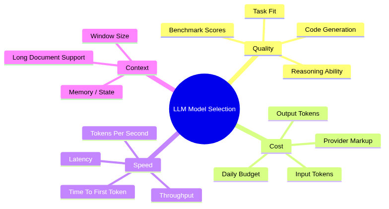
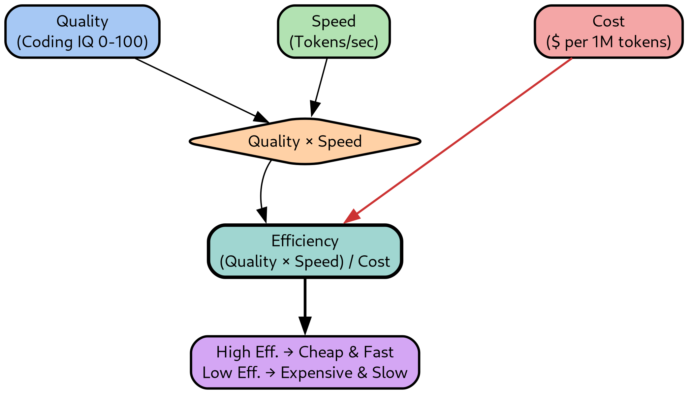
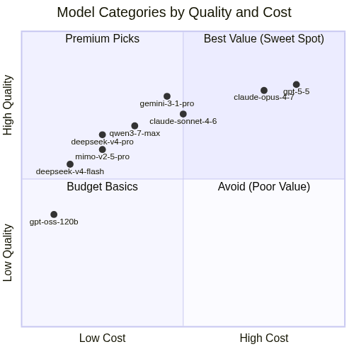

TL;DR Comparing LLMs across real benchmarks and use an efficiency metric that combines quality, cost, and speed to pick the right model for each task
How to Compare LLM Models#
The Landscape of LLM Evaluation#
- Choosing between 50+ available models is hard without a systematic framework
- Different models excel at different things:
- Some are fast but are mediocre at reasoning
- Some score highest on benchmarks but cost 100x more
- Some are great for code but struggle with "creative" reasoning
- The goal is to pick the right model for your workflow at the minimum price

Where to Find Reliable Benchmarks#
- Multiple websites rank AI models, each with a different methodology:
| Site | Address | Best For |
|---|---|---|
| Artificial Analysis | https://artificialanalysis.ai | Comparing quality, cost, speed, latency, context window, and benchmarks. Best for production model selection. |
| Arena (formerly Chatbot Arena) | https://arena.ai | Human preference rankings from blind head-to-head evaluations. Measures real-world user preference. |
| LiveBench | https://livebench.ai | Contamination-resistant benchmarking with frequently refreshed test sets and objective scoring. |
| Hugging Face Open LLM Leaderboard | https://huggingface.co/spaces/open-llm-leaderboard | Comparing open-source and open-weight models with transparent evaluation. |
| Vellum LLM Leaderboard | https://www.vellum.ai/llm-leaderboard | Quick comparison of frontier models across reasoning, coding, and general capabilities. |
| LiveCodeBench | https://livecodebench.github.io | Coding-focused benchmarking using fresh programming problems. |
| OpenRouter Rankings | https://openrouter.ai/rankings | Real-world usage, popularity, and provider adoption metrics. |
| Stanford AI Index | https://hai.stanford.edu/ai-index | Industry trends, model ecosystem analysis, and AI market context. |
- I find the most useful sites day-to-day are:
- OpenRouter Rankings: Real-world usage data shows what others are actually using in production
- Artificial Analysis: Combines benchmarks with pricing, speed, and latency in one place
My Efficiency Metric#
- Raw benchmark scores can be misleading because they ignore cost and speed
- A model that scores 90% but costs 50x more than an 85% model may not be the better choice for daily use
-
I use an efficiency metric that captures the trade-off:
\[ \text{Efficiency} = \frac{\text{Quality} \times \text{Speed}}{\text{Cost}} \]

-
The components are:
- Quality: Artificial Analysis Coding Index (0-100), a benchmark composite for code generation tasks
- Speed: Tokens per second (p50 throughput) from OpenRouter
- Cost: Cost per 1M tokens (input + output) from OpenRouter
-
Higher efficiency means more quality throughput per dollar
- The metric favors cheap, fast models while penalizing expensive slow ones
Model Comparison by Category#
-
I organize models into three categories matching my daily use cases:
- Reasoning and planning: Models for architecture, refactoring plans, and complex multi-step reasoning
- Agentic coding: Models I use for code generation with AI coding
assistants (
claude-code,pi-devare my favorite harnesses) - Text processing: Models for batch text tasks (summarization, classification, extraction)
-
I wrote a little script to generate tables summarizing the characteristics of the models
-
The script lives at
helpers_root/dev_scripts_helpers/llms/openrouter_models_table.pyand supports more options:
"High Cost" -->
"High Quality" -->

Reasoning and Planning Models#
> openrouter_models_table.py --models_from_file helpers_root/dev_scripts_helpers/llms/reasoning_models.txt
| AA_Slug | In_Cost | Out_Cost | Context | Released | Coding_IQ | General_IQ | Speed | Week_Toks | Month_Toks | Efficiency |
|---|---|---|---|---|---|---|---|---|---|---|
| claude-opus-4-7 | 5.00 | 25.0 | 1M | 2026-04-16 | 52.5 | 57.3 | 90.0 | 1504.7B | 7671.2B | 158 |
| claude-sonnet-4-6 | 3.00 | 15.0 | 1M | 2026-02-17 | 46.4 | 44.4 | 42.5 | 1849.1B | 7614.3B | 110 |
| deepseek-v4-pro | 0.435 | 0.870 | 1M | 2026-04-23 | 47.5 | 51.5 | 43.0 | 1861.1B | 5387.6B | 1565 |
| gemini-2-5-pro | 1.25 | 10.0 | 1M | 2025-06-17 | 32.0 | 34.6 | 84.0 | 0 | 9.8B | 239 |
| gemini-3-1-pro-preview | 2.00 | 12.0 | 1M | 2026-02-19 | 55.5 | 57.2 | 95.0 | 239.3B | 1423.5B | 377 |
| gemini-3-5-flash | 1.50 | 9.00 | 1M | 2026-05-19 | 45.0 | 55.3 | 170.0 | 492.7B | 1371.3B | 729 |
| kat-coder-pro-v2 | 0.300 | 1.20 | 256K | 2026-03-27 | 45.6 | 43.8 | 16.0 | 0 | 0 | 486 |
| kimi-k2-6 | 0.680 | 3.41 | 262K | 2026-04-20 | 47.1 | 53.9 | 43.0 | 342.0B | 2818.1B | 495 |
| gpt-5-2 | 1.75 | 14.0 | 400K | 2025-12-10 | 48.7 | 51.3 | 41.0 | 67.6B | 103.4B | 127 |
| gpt-5-3-codex | 1.75 | 14.0 | 400K | 2026-02-24 | 53.1 | 53.6 | 41.0 | 81.4B | 337.6B | 138 |
| gpt-5-4 | 2.50 | 15.0 | 1M | 2026-03-05 | 57.2 | 56.8 | 42.0 | 241.0B | 1133.9B | 137 |
| gpt-5-5 | 5.00 | 30.0 | 1M | 2026-04-24 | 59.1 | 60.2 | 33.0 | 447.2B | 1979.6B | 56 |
| qwen3-7-max | 1.25 | 3.75 | 1M | 2026-05-21 | 50.1 | 56.6 | 45.0 | 178.3B | 368.3B | 451 |
| qwen3-7-plus | 0.400 | 1.60 | 1M | 2026-06-03 | 46.5 | 53.3 | 11.0 | 0 | 0 | 256 |
| mimo-v2-5-pro | 0.435 | 0.870 | 1M | 2026-04-22 | 45.5 | 53.8 | 29.0 | 519.0B | 2467.9B | 1011 |
Agentic Coding Models#
> openrouter_models_table.py --models_from_file helpers_root/dev_scripts_helpers/llms/agentic_coding_models.txt
| AA_Slug | In_Cost | Out_Cost | Context | Released | Coding_IQ | General_IQ | Speed | Week_Toks | Month_Toks | Efficiency |
|---|---|---|---|---|---|---|---|---|---|---|
| claude-opus-4-7 | 5.00 | 25.0 | 1M | 2026-04-16 | 52.5 | 57.3 | 90.0 | 1504.7B | 7671.2B | 158 |
| claude-sonnet-4-6 | 3.00 | 15.0 | 1M | 2026-02-17 | 46.4 | 44.4 | 42.5 | 1849.1B | 7614.3B | 110 |
| deepseek-v4-flash | 0.098 | 0.197 | 1M | 2026-04-23 | 38.7 | 46.5 | 50.0 | 4066.7B | 13216.4B | 6562 |
| deepseek-v4-pro | 0.435 | 0.870 | 1M | 2026-04-23 | 47.5 | 51.5 | 43.0 | 1861.1B | 5387.6B | 1565 |
| gemini-2-5-pro | 1.25 | 10.0 | 1M | 2025-06-17 | 32.0 | 34.6 | 84.0 | 0 | 9.8B | 239 |
| gemini-3-1-pro-preview | 2.00 | 12.0 | 1M | 2026-02-19 | 55.5 | 57.2 | 95.0 | 239.3B | 1423.5B | 377 |
| kat-coder-pro-v2 | 0.300 | 1.20 | 256K | 2026-03-27 | 45.6 | 43.8 | 16.0 | 0 | 0 | 486 |
| kimi-k2-6 | 0.680 | 3.41 | 262K | 2026-04-20 | 47.1 | 53.9 | 43.0 | 342.0B | 2818.1B | 495 |
| qwen3-7-max | 1.25 | 3.75 | 1M | 2026-05-21 | 50.1 | 56.6 | 45.0 | 178.3B | 368.3B | 451 |
| mimo-v2-5-pro | 0.435 | 0.870 | 1M | 2026-04-22 | 45.5 | 53.8 | 29.0 | 519.0B | 2467.9B | 1011 |
Text Processing Models#
> openrouter_models_table.py --models_from_file helpers_root/dev_scripts_helpers/llms/text_models.txt
| AA_Slug | In_Cost | Out_Cost | Context | Released | Coding_IQ | General_IQ | Speed | Week_Toks | Month_Toks | Efficiency |
|---|---|---|---|---|---|---|---|---|---|---|
| gpt-oss-120b | 0.039 | 0.180 | 131K | 2025-08-05 | 28.6 | 33.3 | 10.0 | 424.1B | 1746.0B | 1306 |
| gpt-oss-20b | 0.029 | 0.140 | 131K | 2025-08-05 | 18.5 | 24.5 | 59.0 | 0 | 28.3B | 6459 |
- Note: This category has fewer data points because smaller open-weight models are not always tracked by Artificial Analysis benchmarks (Coding_IQ and Speed may be missing)
My Personal Workflow#
-
After comparing models across these categories, my daily setup has converged to the following
-
Reasoning and planning: I use
Claude Opus 4.7-4.8orSonnet 4.6for architecture design, refactoring plans, and complex multi-step analysis- These are the most expensive models I use, but the quality is worth it for tasks where correctness and depth matter
-
Agentic coding: I use
Deepseek-v4-flashat max effort for most code generation- It is slightly slower and marginally worse than
Claude Haiku 4.5in my gut benchmark, but it is almost 10x cheaper - The efficiency metric reflects this: it dominates the agentic coding table because its cost is so low and with a decent quality
- It is slightly slower and marginally worse than
-
Daily spend: With this setup I spend around $10 per day on tokens
-
Quality principle: My goal is to write code with AI that matches or exceeds what I write by hand
- I review and edit every single line of generated code: the same way I have reviewed thousands of PRs from humans
- I have measured a productivity increase of ~10x in terms of high-quality
lines of code per day
- Before AI: ~150 lines of new code per day
- After AI: ~3000 lines of new code per day
- The refactoring and gardening of code probably is at 100-1000x since I literally can leave it running and churn on boring operations (once I spent time writing a prompt and making sure it does 99% of the write things)
-
Key insight:
- The most expensive model is rarely the best choice for routine work
- Efficiency metrics reveal that mid-range models (
Deepseek V4,Qwen,MIMO) deliver 80-90% of the quality at 5-10% of the cost - Reserve premium models for tasks where the extra quality directly impacts the outcome